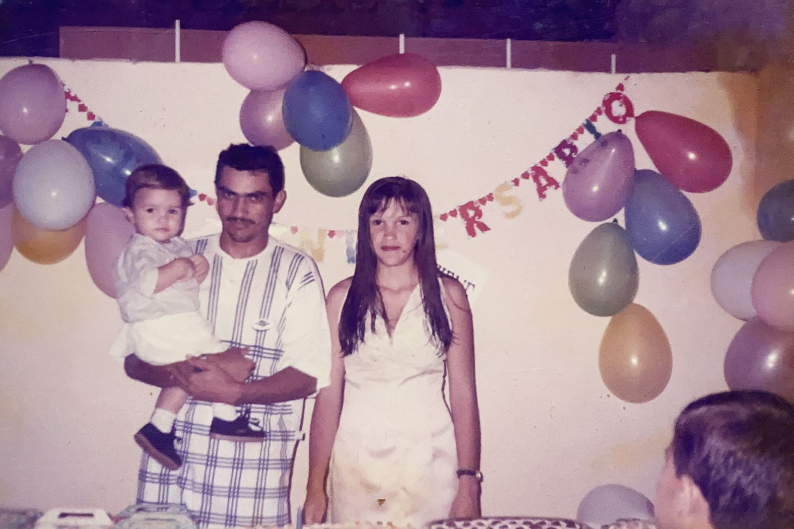
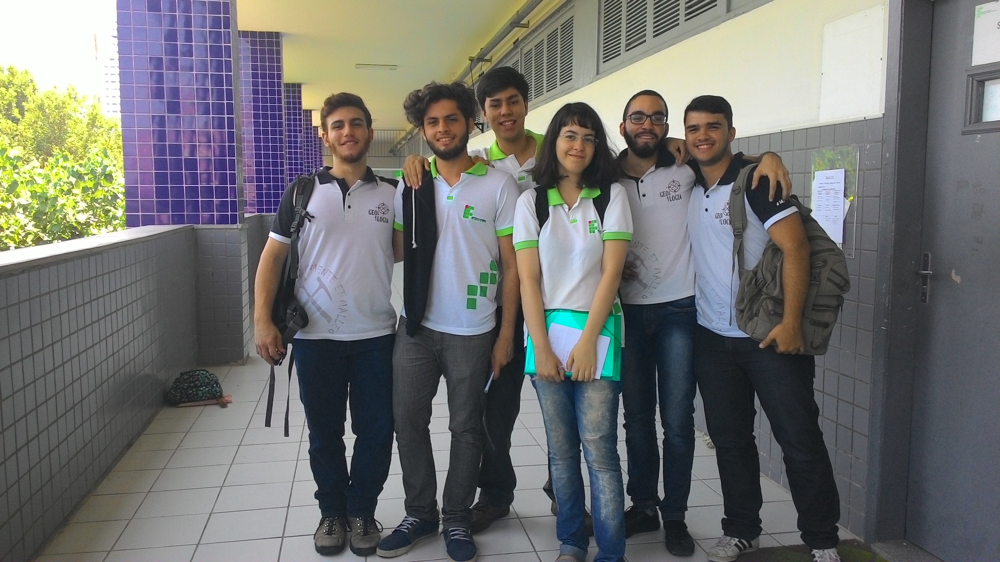

18 de Março de 1998
Para me conhecer um pouquinho...

Filho de Daniel e Delma, o pequeno Danrley, ou Dandan como é conhecido, nasce no tradicional município de Santana do Matos, na madrugada do dia 18 de Março de 1997. Morou até os 3 anos em um sítio de nome "Barroca Funda" no interior da mesma cidade quando se mudou para Parnamirim município da Grande Natal, onde vive até os atuais dias.
Em algum momento de 2015
Último dia em casa...

O jovem Dandan em seu ensino fundamental já mirava realizar seus estudos no ensino médio técnico do IFRN. Em 2011 realizou duas provas para ingresso na instituição e foi aprovado para o curso de Geologia, iniciado em 2012. Teve no IFRN uma casa, a qual frequentou com afinco e carinho durante seus 4 anos de ensino médio e técnico. Lá eu fiz várias amizades, me aproximei muito da cultura, através da música, do teatro e da dança de salão, uma das minhas paixões até hoje. Lugar também onde tive a sorte e o prazer de conhecer aquela que logo logo terei o prazer de chamar de esposa. Do IFRN levo apenas lembranças maravilhosas, cheias de carinho e saudade.
12 de Março de 2020
Conquistando o tão almeijado canudo.
Em 12 de Março de 2020, logo antes da pandemia de COVID-19, eu colava grau referente à minha primeira graduação em Educação Física. Durante os 4 anos de curso eu me desenvolvi muito com relação ao ensino e pesquisa, principais áreas nas quais me dediquei durante esse período. Na universidade federal me formei professor, primeiro licenciado e em seguida bacharelado. Ela me ensinou sobre direitos e deveres de um cidadão frequentados de uma universidade pública, gratuita e de qualidade, característica as quais carrego hoje em minha prática profissional.